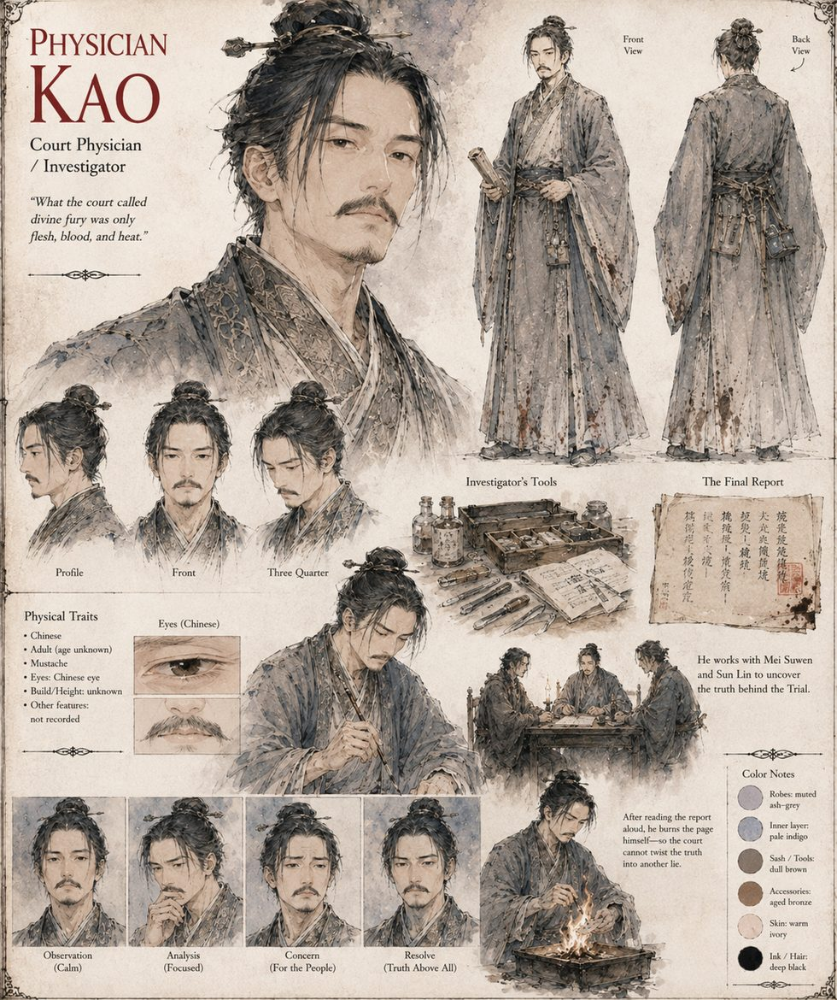

Physician Kao
Court Physician · investigator
A court physician who joins Mei Suwen and Sun Lin in the first quiet week after the Second Trial to measure what remains. Between them they test the basin's water, drawn down, against silk thread and iron nails; they examine the Emperor's ruined breastplate, its interior scorched in a pattern that matches, node for node, the exact points at which his skin blistered; and they examine the exhausted animal itself. They write the finding on a single unadorned page: an unusually large specimen of an unremarkable river species, nocturnal, sensitive to sudden movement, with a defensive reflex rather than a judgment — and an Emperor killed by his own armor.
He reads it aloud to the small commission that receives it, and watches their faces arrange themselves into the polite blankness of people who have decided in advance not to be persuaded. Then he takes the page home and burns it himself, so that the court cannot twist the truth into another lie. The histories do not record the page, or its author.
“What the court called divine fury was only flesh, blood, and heat.”
Appears in The Heavenly Thunder-Serpent